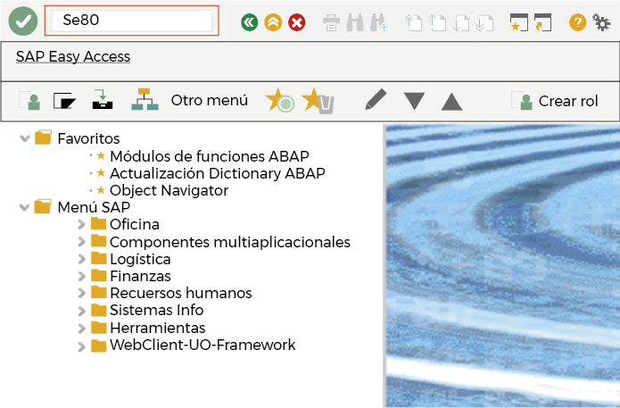
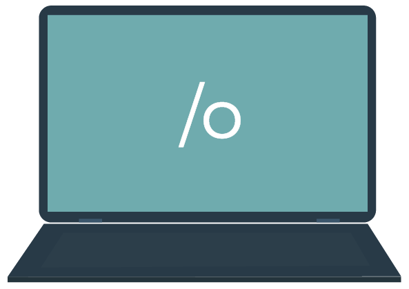
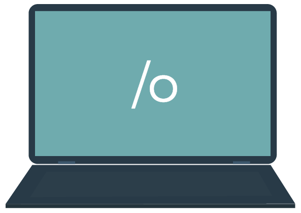
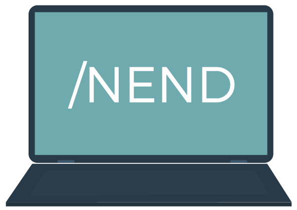
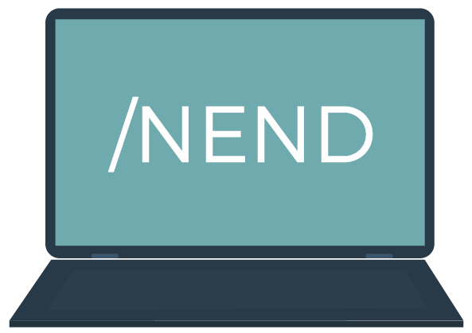
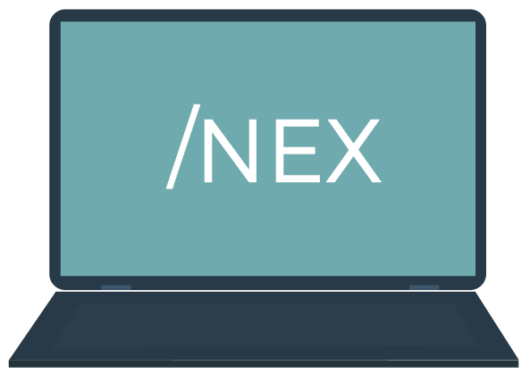

ToqueHaga clic en cada tema para leer su información
- Menú easy screen
-

Esta es la primera pantalla que se observa al conectarse a un sistema SAP.
- Elementos de una pantalla
-
ToqueHaga clic en cada apuntador para leer su información.......
ToqueHaga clic en cada tema para leer su información
- Transacciones para navegar
- 
- SE80
-
Por la SE80 se ingresa al Object Navigator. Esta es la transacción central donde se puede acceder a la parte técnica de SAP.
- Comandos
-
/N
Para cancelar la transacción en curso.

/Nxxxx
Para llamar la transacción xxxx directamente desde otra transacción. Sin el prefijo solo se puede llamar xxxx desde la pantalla SAP Easy Access.
 
/o
Para visualizar el resumen de las sesiones de SAP GUI en su ordenador.
/oxxxx
Para llamar la transacción xxxx en una ventana nueva.
 
/NEND
Para finalizar la sesión con una ventana de diálogo de confirmación.
INEX
Para finalizar la sesión sin una ventana de diálogo de confirmación.
/l
Para borrar la ventana que se está utilizando actualmente.